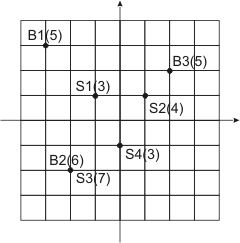

Home Page
F.A.Qs
Statistical Charts
Past Contests
Scheduled Contests
Award Contest
| Online Judge | Problem Set | Authors | Online Contests | User | ||||||
|---|---|---|---|---|---|---|---|---|---|---|
| Web Board Home Page F.A.Qs Statistical Charts | Current Contest Past Contests Scheduled Contests Award Contest | |||||||||
|
Language: Evacuation Plan
Description The City has a number of municipal buildings and a number of fallout shelters that were build specially to hide municipal workers in case of a nuclear war. Each fallout shelter has a limited capacity in terms of a number of people it can accommodate, and there's almost no excess capacity in The City's fallout shelters. Ideally, all workers from a given municipal building shall run to the nearest fallout shelter. However, this will lead to overcrowding of some fallout shelters, while others will be half-empty at the same time.
To address this problem, The City Council has developed a special evacuation plan. Instead of assigning every worker to a fallout shelter individually (which will be a huge amount of information to keep), they allocated fallout shelters to municipal buildings, listing the number of workers from every building that shall use a given fallout shelter, and left the task of individual assignments to the buildings' management. The plan takes into account a number of workers in every building - all of them are assigned to fallout shelters, and a limited capacity of each fallout shelter - every fallout shelter is assigned to no more workers then it can accommodate, though some fallout shelters may be not used completely. The City Council claims that their evacuation plan is optimal, in the sense that it minimizes the total time to reach fallout shelters for all workers in The City, which is the sum for all workers of the time to go from the worker's municipal building to the fallout shelter assigned to this worker. The City Mayor, well known for his constant confrontation with The City Council, does not buy their claim and hires you as an independent consultant to verify the evacuation plan. Your task is to either ensure that the evacuation plan is indeed optimal, or to prove otherwise by presenting another evacuation plan with the smaller total time to reach fallout shelters, thus clearly exposing The City Council's incompetence. During initial requirements gathering phase of your project, you have found that The City is represented by a rectangular grid. The location of municipal buildings and fallout shelters is specified by two integer numbers and the time to go between municipal building at the location (Xi, Yi) and the fallout shelter at the location (Pj, Qj) is Di,j = |Xi - Pj| + |Yi - Qj| + 1 minutes. Input The input consists of The City description and the evacuation plan description. The first line of the input file consists of two numbers N and M separated by a space. N (1 ≤ N ≤ 100) is a number of municipal buildings in The City (all municipal buildings are numbered from 1 to N). M (1 ≤ M ≤ 100) is a number of fallout shelters in The City (all fallout shelters are numbered from 1 to M).
The following N lines describe municipal buildings. Each line contains there integer numbers Xi, Yi, and Bi separated by spaces, where Xi, Yi (-1000 ≤ Xi, Yi ≤ 1000) are the coordinates of the building, and Bi (1 ≤ Bi ≤ 1000) is the number of workers in this building. The description of municipal buildings is followed by M lines that describe fallout shelters. Each line contains three integer numbers Pj, Qj, and Cj separated by spaces, where Pi, Qi (-1000 ≤ Pj, Qj ≤ 1000) are the coordinates of the fallout shelter, and Cj (1 ≤ Cj ≤ 1000) is the capacity of this shelter. The description of The City Council's evacuation plan follows on the next N lines. Each line represents an evacuation plan for a single building (in the order they are given in The City description). The evacuation plan of ith municipal building consists of M integer numbers Ei,j separated by spaces. Ei,j (0 ≤ Ei,j ≤ 1000) is a number of workers that shall evacuate from the ith municipal building to the jth fallout shelter. The plan in the input file is guaranteed to be valid. Namely, it calls for an evacuation of the exact number of workers that are actually working in any given municipal building according to The City description and does not exceed the capacity of any given fallout shelter. Output If The City Council's plan is optimal, then write to the output the single word OPTIMAL. Otherwise, write the word SUBOPTIMAL on the first line, followed by N lines that describe your plan in the same format as in the input file. Your plan need not be optimal itself, but must be valid and better than The City Council's one. Sample Input 3 4 -3 3 5 -2 -2 6 2 2 5 -1 1 3 1 1 4 -2 -2 7 0 -1 3 3 1 1 0 0 0 6 0 0 3 0 2 Sample Output SUBOPTIMAL 3 0 1 1 0 0 6 0 0 4 0 1 Source | ||||||||||
[Submit] [Go Back] [Status] [Discuss]
All Rights Reserved 2003-2013 Ying Fuchen,Xu Pengcheng,Xie Di
Any problem, Please Contact Administrator